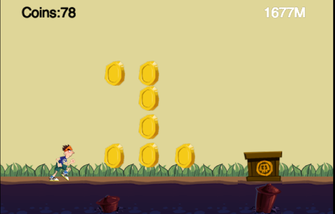
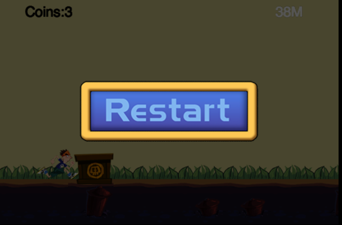

Implement Game Over Logic and More
Introduction
In this tutorial, we'll implement out game over logic, updating HUD and a simple gesture recognizer. With out any further ado, let's dive into the tutorial.
Update Game HUD
Update Player Running Meters
At first, let's add a updateMeter method into the StatusLayer Class:
updateMeter:function (px) {
this.labelMeter.setString(parseInt(px / 10) + "M");
}
This method constantly change the value of labelMeter. Here we use parseInt function to convert the result into a integer value.
The argument px stands for pixel, so every 10 px is one meter.
Now, we should call this method in each frame.
Open AnimationLayer.js and add the following code at the beginning of update function:
// update meter
var statusLayer = this.getParent().getParent().getChildByTag(TagOfLayer.Status);
statusLayer.updateMeter(this.sprite.getPositionX() - g_runnerStartX);
Update Coin Count
When the player collect a coin, we should update the coin indicator.
At first, let's add a addCoin method in StatusLayer:
addCoin:function (num) {
this.coins += num;
this.labelCoin.setString("Coins:" + this.coins);
},
When the player collide with the coin, we should call this method.
Now it's time to implement it.
Open PlayScene.js and add the following code at the end of colisionCoinBegin method:
var statusLayer = this.getChildByTag(TagOfLayer.Status);
statusLayer.addCoin(1);
Every time the player collides with the coin, the colisionCoinBegin method will be called and our coin count will be increase by one.
Save all files and git it a try:)
Here is the screenshot:

Add Game Over Logic into the Game
Design and Implement the Game Over Layer
In order to keep things simple, we just add a menu item at the center of our game over layer.
When you click the restart menu, the game will restart again.
So the design is very trivial, let's implement it.
Here is the whole implementation of GameOverLayer.js:
var GameOverLayer = cc.LayerColor.extend({
// constructor
ctor:function () {
this._super();
this.init();
},
init:function () {
this._super(cc.color(0, 0, 0, 180));
var winSize = cc.director.getWinSize();
var centerPos = cc.p(winSize.width / 2, winSize.height / 2);
cc.MenuItemFont.setFontSize(30);
var menuItemRestart = new cc.MenuItemSprite(
new cc.Sprite(res.restart_n_png),
new cc.Sprite(res.restart_s_png),
this.onRestart, this);
var menu = new cc.Menu(menuItemRestart);
menu.setPosition(centerPos);
this.addChild(menu);
},
onRestart:function (sender) {
cc.director.resume();
cc.director.runScene(new PlayScene());
}
});
Here we used two sprite named s_restart_n and s_restart_s to create our restart menu item.
So we should add the resource file into the res directory and define the resources path.
Open resource.js and add the following code lines:
restart_n_png : "res/restart_n.png",
restart_s_png : "res/restart_s.png"
//add the following two lines at the end of g_resources array.
res.restart_n_png,
res.restart_s_png
The code of init method is self-explanation. But you should pay attention to the callback onRestart method.
We have called the resume function of cc.Director. Why should be do this? Because we call pause method when the player die.
Game Over When The Player Collide with a Rock
Now, let's display the game over layer when the player collide with the rock.
Open PlayScene and add the following code lines at the end of collisionRockBegin method:
collisionRockBegin:function (arbiter, space) {
cc.log("==game over");
cc.director.pause();
this.addChild(new GameOverLayer());
},
Yeah, it's done. Now run the game again.
Here is the final screenshot:

Implement Your Own Simple Gesture Recognizer
At this section, we will design a very simple gesture recognizer.
When we swipe our finger on the screen from bottom to up, the recognizer will detect it.
The algorithm for detecting the swipe gesture is very straightforward. When the touch begin event is detected, we store the first touch point in the array. When the touch moves event is detected, we append the touch point at the end of point array.
We can simply compare the difference of x axis or y axis of two adjacent point to determine the swipe direction.
Here is the code snippets to do the magic:
function Point(x, y)
{
this.X = x;
this.Y = y;
}
// class define
function SimpleRecognizer()
{
this.points = [];
this.result = "";
}
// be called in onTouchBegan
SimpleRecognizer.prototype.beginPoint = function(x, y) {
this.points = [];
this.result = "";
this.points.push(new Point(x, y));
}
// be called in onTouchMoved
SimpleRecognizer.prototype.movePoint = function(x, y) {
this.points.push(new Point(x, y));
if (this.result == "not support") {
return;
}
var newRtn = "";
var len = this.points.length;
var dx = this.points[len - 1].X - this.points[len - 2].X;
var dy = this.points[len - 1].Y - this.points[len - 2].Y;
if (Math.abs(dx) > Math.abs(dy)) {
if (dx > 0) {
newRtn = "right";
} else {
newRtn = "left";
}
} else {
if (dy > 0) {
newRtn = "up";
} else {
newRtn = "down";
}
}
// first set result
if (this.result == "") {
this.result = newRtn;
return;
}
// if diretcory change, not support Recongnizer
if (this.result != newRtn) {
this.result = "not support";
}
}
// be called in onTouchEnded
SimpleRecognizer.prototype.endPoint = function() {
if (this.points.length < 3) {
return "error";
}
return this.result;
}
SimpleRecognizer.prototype.getPoints = function() {
return this.points;
}
After the gesture is detected, we can call endPoint of the SimpleRecognizer to get the final result.
Currently it supports four simple types: up, down, left and right. You can extend your own more complex one.
Handling Touch Event, Player Jumping Animation and Logic
Add Jumping Animation of the Player
In order to implement the jumping animation, we should prepare our game arts first. Here we have done it for you.
You can download the whole project from the Summary section and copy&paste the running.plist and running.png file into the res directory.
When the game starts, the player will be running infinite until him collide with the rock. We want to let the player jump by swiping upwards.
Thus we can play the game a little bit longer.
When the player jumps up or jumps down, we need to play corresponding animations.
So at first, let's add two more animation action member variables into the AnimationLayer:
jumpUpAction:null,
jumpDownAction:null,
And then let's add a new method named initAction:
initAction:function () {
// init runningAction
var animFrames = [];
// num equal to spriteSheet
for (var i = 0; i < 8; i++) {
var str = "runner" + i + ".png";
var frame = cc.spriteFrameCache.getSpriteFrame(str);
animFrames.push(frame);
}
var animation = new cc.Animation(animFrames, 0.1);
this.runningAction = new cc.RepeatForever(new cc.Animate(animation));
this.runningAction.retain();
// init jumpUpAction
animFrames = [];
for (var i = 0; i < 4; i++) {
var str = "runnerJumpUp" + i + ".png";
var frame = cc.spriteFrameCache.getSpriteFrame(str);
animFrames.push(frame);
}
animation = new cc.Animation(animFrames, 0.2);
this.jumpUpAction = new cc.Animate(animation);
this.jumpUpAction.retain();
// init jumpDownAction
animFrames = [];
for (var i = 0; i < 2; i++) {
var str = "runnerJumpDown" + i + ".png";
var frame = cc.spriteFrameCache.getSpriteFrame(str);
animFrames.push(frame);
}
animation = new cc.Animation(animFrames, 0.3);
this.jumpDownAction = new cc.Animate(animation);
this.jumpDownAction.retain();
},
In this function, we have initialized all the animations of the players.
At lasts, let's remove the initialize code of runningAction we did before in the init function and call initAction method instead.
//init actions
this.initAction();
// // init runningAction
// var animFrames = [];
// for (var i = 0; i < 8; i++) {
// var str = "runner" + i + ".png";
// var frame = cc.spriteFrameCache.getSpriteFrame(str);
// animFrames.push(frame);
// }
// var animation = new cc.Animation(animFrames, 0.1);
// this.runningAction = new cc.RepeatForever(new cc.Animate(animation));
Handling Touch Event
Now it's time to handle touch event. At first, we should enable touch handling of the AnimationLayer.
Add the following code snippets at the end of init method:
cc.eventManager.addListener({
event: cc.EventListener.TOUCH_ONE_BY_ONE,
swallowTouches: true,
onTouchBegan: this.onTouchBegan,
onTouchMoved: this.onTouchMoved,
onTouchEnded: this.onTouchEnded
}, this)
These two code lines can activate the touch dispatching function.
Now let's add three callbacks we needed to handle our touch event:
onTouchBegan:function(touch, event) {
var pos = touch.getLocation();
event.getCurrentTarget().recognizer.beginPoint(pos.x, pos.y);
return true;
},
onTouchMoved:function(touch, event) {
var pos = touch.getLocation();
event.getCurrentTarget().recognizer.movePoint(pos.x, pos.y);
},
onTouchEnded:function(touch, event) {
var rtn = event.getCurrentTarget().recognizer.endPoint();
cc.log("rnt = " + rtn);
switch (rtn) {
case "up":
event.getCurrentTarget().jump();
break;
default:
break;
}
},
When you touch the screen the onTouchBegan method will be called. When you hold your finger and move it around, the onTouchMoved method will be called. When you release your finger, the onTouchEnded method will be called.
Here we have used our simple gesture recognizer to detect the "swipe out" gesture.
Wrap them all
Now it's time to wrap them all.
At first, add the following enumerations in the beginning of the AnimationLayer:
// define enum for runner status
if(typeof RunnerStat == "undefined") {
var RunnerStat = {};
RunnerStat.running = 0;
RunnerStat.jumpUp = 1;
RunnerStat.jumpDown = 2;
};
We use these enums to represent different state of the player.
Then we should add another two member variables in the AnimationLayer:
recognizer:null,
stat:RunnerStat.running,// init with running status
And init the recognizer at the end of init method:
this.recognizer = new SimpleRecognizer();
At last, we should implement our jump method:
jump:function () {
cc.log("jump");
if (this.stat == RunnerStat.running) {
this.body.applyImpulse(cp.v(0, 250), cp.v(0, 0));
this.stat = RunnerStat.jumpUp;
this.sprite.stopAllActions();
this.sprite.runAction(this.jumpUpAction);
}
},
And also we should tie these things up int the update function:
//in the update method of AnimationLayer
// check and update runner stat
var vel = this.body.getVel();
if (this.stat == RunnerStat.jumpUp) {
if (vel.y < 0.1) {
this.stat = RunnerStat.jumpDown;
this.sprite.stopAllActions();
this.sprite.runAction(this.jumpDownAction);
}
} else if (this.stat == RunnerStat.jumpDown) {
if (vel.y == 0) {
this.stat = RunnerStat.running;
this.sprite.stopAllActions();
this.sprite.runAction(this.runningAction);
}
}
One more word, don't forget the cleanup stuff. We should release the created actions when the AnimationLayer exit.
onExit:function() {
this.runningAction.release();
this.jumpUpAction.release();
this.jumpDownAction.release();
this._super();
},
You may also want to check whether all the created js files are loaded in cocos2d.js file or not.
Summary
Congratulations! You have finished another epic tutorial again.
Let's see what we have done in this tutorial.
At first, we have learned how to update our game hud elements.
Then we added the game over logic.
At last, we have created a simple gesture recognizer to handle the controlling of our hero's jumping action.
You can download the final project from here.
Where to go from here?
In the next tutorial, we will cover the final bolts and nuts of the parkour game. Keep tuning!